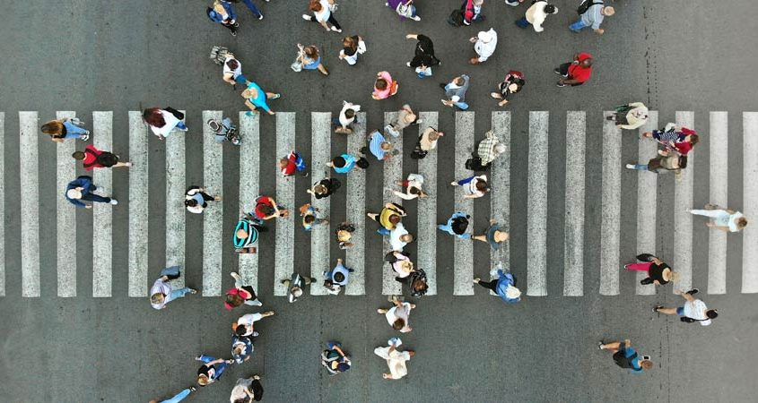

Que La Ciudad No Te Ahogue: Trucos Para Mejorar Tu Estilo De Vida

¿Qué tienen en común Bogotá, São Paulo y la Ciudad de México? Que el tránsito vehicular es intenso y provoca
demoras de hasta una hora en trayectos cortos, lo que impacta en nuestro estilo de vida.
El uso de sistemas de movilidad alternativa, entonces, se asoma como una respuesta. Dejar el auto se ha convertido en una
transformación que solo requiere de voluntad. De hecho, hay aplicaciones que ayudan.
Grin, por ejemplo, se enfoca en construir una comunidad de personas que se mueven en monopatines eléctricos.
A través del celular informa cuál es estación más cercana, con un código QR se activa el vehículo, te desplazas y
lo dejas en otra estación.
Biko, por su parte, recompensa a los ciclistas. Convierte cada kilómetro pedaleado en pesos que se canjean en negocios participantes.
Los ciclistas son un agente de cambio en Bogotá, un estudio del Banco Interamericano de Desarrollo demostró
que es la ciudad donde más personas se desplazan por esta vía en toda Latinoamérica, alcanzando alrededor de 611 mil
viajes al día, lo que evita que los bogotanos respiren 1206 toneladas de dióxido de carbono al año. Es por eso, y por
su desarrollada infraestructura, que se la conoce como “la ciudad de la bicicleta”.
Sin embargo, todavía es poco. De todos los viajes que se realizan, únicamente el 5 por ciento son en bicicleta.
Los anteriores son ejemplos de las soluciones que tenemos ante la realidad de que el futuro es urbano.
La mayoría de la población vivirá en alguna ciudad para el año 2050, de acuerdo con un informe de la Organización de
las Naciones Unidas; esto trae ventajas, pero también retos.